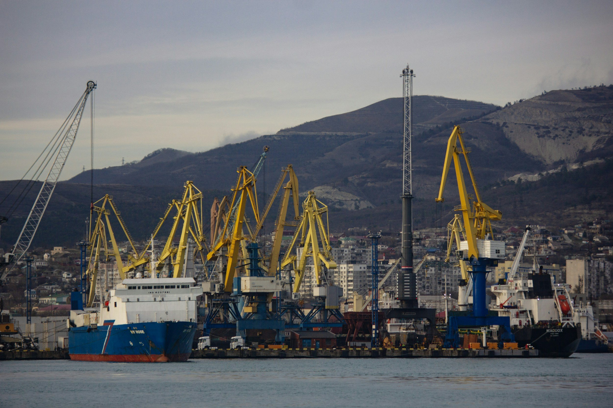

ByEirini Diamantara&Dimitris Roumeliotis
The dry bulk orderbook has expanded meaningfully during the first half of 2026, pointing to a market that continues to invest in fleet renewal despite the uncertainty surrounding future fuels, shipyard pricing and long-term demand visibility. As of Jan-Jun 2026, the bulk carrier orderbook stands at 1,642 vessels against an active fleet of 14,908 units, translating into an orderbook-to-fleet ratio of 11.0%. This compares with 1,363 vessels on order against a fleet of 14,360 units during the same period of 2025, when the ratio stood at 9.5%. In other words, while the active fleet has grown by around 3.8% year-on-year, the orderbook has increased by more than 20%, highlighting a clear acceleration in contracting appetite.
The composition of the orderbook remains heavily concentrated in the geared and mid-sized segments. Ultramax vessels continue to dominate, with 505 units on order and an orderbook-to-fleet ratio of 27.9%, slightly higher than the 25.9% recorded in 2025. Kamsarmaxes follow with 349 vessels on order, although their ratio has eased from 22.8% in 2025 to 19.3% in 2026. Handysize units remain another important part of the forward supply picture, with 272 vessels on order and a stable ratio of around 9%. The most striking increase, however, is seen in the Newcastlemax sector, where the orderbook has almost doubled from 94 vessels in 2025 to 178 vessels in 2026, pushing the orderbook-to-fleet ratio from 18.8% to 34.2%.
Deliveries also moved higher in 2026. From early January to late June 2026, a total of 310 bulk carrier newbuildings have been delivered, compared with 266 in 2025, representing a 16.5% increase. Ultramax deliveries remain unchanged at 98 units, but Kamsarmax deliveries more than doubled from 45 vessels in 2025 to 98 vessels in 2026. Handysize deliveries are also steady at 70 units, while Newcastlemax deliveries were 11 vessels from 14 vessels in 2025. This delivery profile suggests that fleet growth is increasingly concentrated finally around the Ultramax and Kamsarmax sectors, which remain the preferred workhorses for owners seeking trading flexibility and wider employment optionality.
Contracting activity presents an even stronger signal. Within 2026 till the end of June, 285 bulk carrier contracts have been placed, compared with 172 in 2025, an increase of almost 66%. Ultramaxes led the way with 109 contracts, followed by Kamsarmaxes with 52, Handysizes with 48, Newcastlemaxes with 37 and Capesizes with 26. This shows that owners are not only replacing older tonnage but also positioning themselves in segments where they expect stronger long-term utilisation and liquidity.
Greek owners have been particularly active. Greek deliveries increased from 20 vessels in 2025 to 76 in 2026, accounting for almost 25% of total bulk carrier deliveries this year. Their delivery schedule is heavily focused on Kamsarmaxes and Ultramaxes, with 47 and 18 units respectively. On the contracting side, Greek activity rose even more sharply, from just 12 contracts in the first six months of 2025 to 69 in the same period of 2026. This represents around 24% of all dry bulk contracts placed this year. Greek owners ordered 23 Kamsarmaxes, 22 Capesizes, 12 Ultramaxes and 12 Newcastlemaxes, showing a clear shift toward larger and more commercially liquid tonnage. Overall, the data suggests that Greek owners are not simply following the market; they are actively helping shape the next phase of dry bulk fleet renewal.
Data source:Xclusiv Shipbrokers Inc.